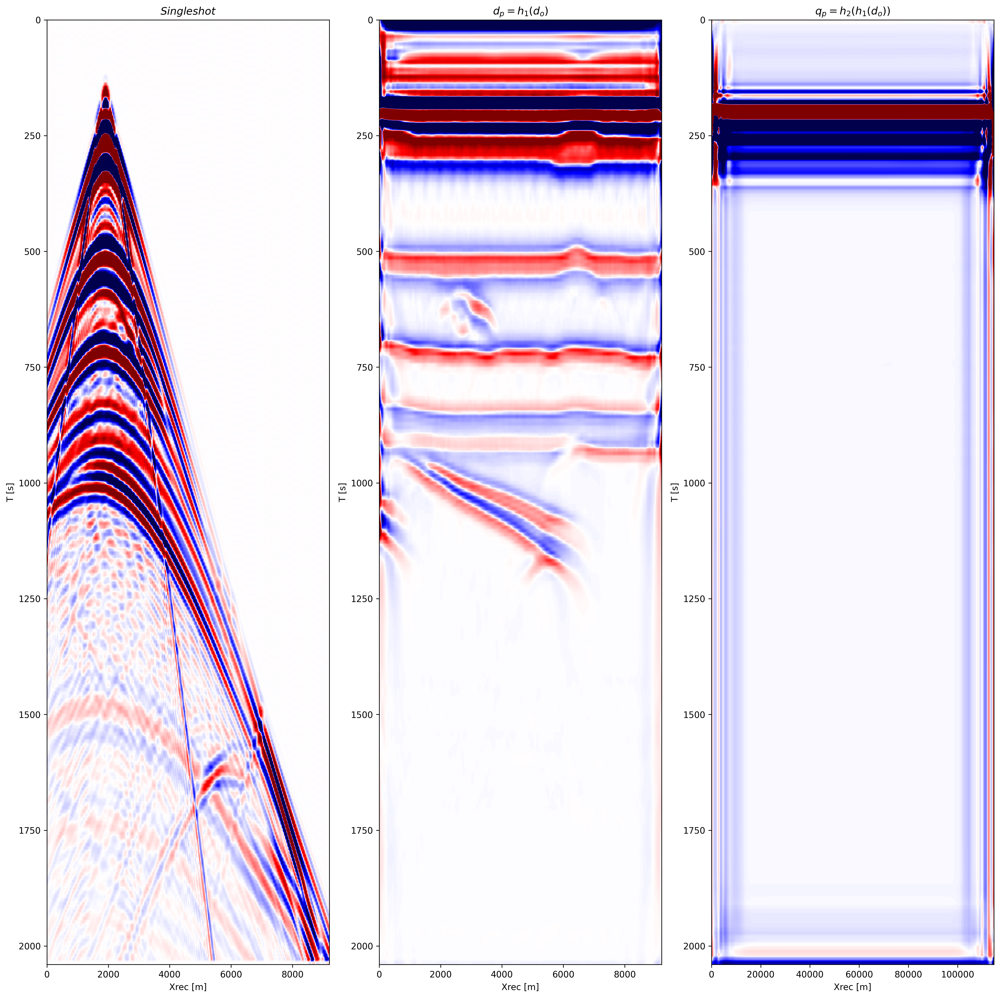
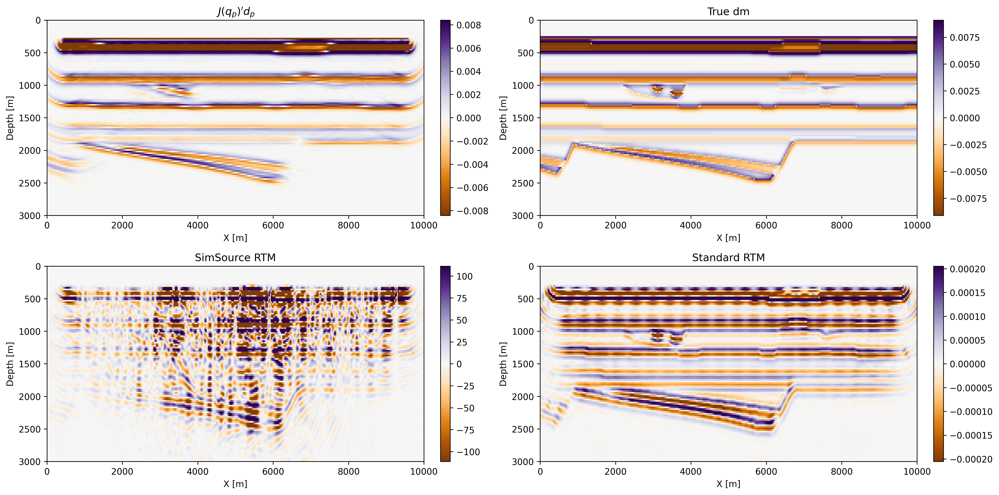

Learned one-shot imaging
Learned super-shot/sim-source pair for one-shot imaging.
Learn simultenaous sources and super shot simulteanously
\[ \newcommand{\pluseq}{\mathrel{+}=} \]
Introduction
qrwtygr13eqghqetq
Methodology
We now introduce the formulation of aour learned simultenous source-data pair for seismic imaging. We derive two training problem where the first onbe rely on the knowledge of the true perturbation, while the second one solely rely on the observed data. Fundamentally, we are introducing a formulation that learns the most informative single super-shot and correspoinding source given either a subsurface refelctivity model or the surface recorded data.
Summary networks and probabilistic symmetry
refs: (Deans 2002) -Summary statistics reduce the size of incoming datasets while maintainting the same posterior distribution p(x|y) = p(x|summary) (Radev et al. 2020) -Summary networks learn to reduce the size of incoming datasets and maximize informativeness of the summarized data due to joint learning of summary network and posterior learning network. -hand waves an argument that jointly trained networks will maximize the mutual information between h(y) and x (Müller et al. 2021) -Goes in to further detail and rigoursly proves that jointly trained networks will maximize the mutual information between h(y) and x (Bloem-Reddy and Teh 2020) suggests to use learned layers that are invariant under a certain transformation. This transformation is described by the probabilistic assumption on your data.
Example paragraph: This work takes inspiration from the concept of a summary network (Radev et al. 2020) these are networks that compress observables \(d_{obs}\) while maximining information useful for inference of un-observables \(x\). To guide the architectural design of a summary network (Bloem-Reddy and Teh 2020) suggests to use learned layers that respect the probabalistic symmetry of the data. Practically, this is accomplished by making the layers be invariant under a certain transformation. For the case active source seismic imaging, i.i.d sampling entails the assumption that the order of sources does not matter. This assumption is implicit in the sum structure of RTM/gradient calculations. Therefore it is invariant with respect to permutation transformation. Our approach is most similar to this case, since we use a UNet with many input channels that output a single channel. In our testing, having a separate network for each dataset did not perform better thatn simply inputing each dataset along a channel.
Supervised
THe simplest formulation aims to learn the super-shot and simultenaous source that best inform the model perturbation, given the surfac recorded data. Mathematically, it means that we are trying to fit the true mode lperturbation with two networks that learn a single super-shot and simultenous source for the Jacobian from the indicudual field recorded shot records. Mathematically, the learning can be written as: \[ min_{\theta, \phi} \ \mathbb{E}\left[ J(\mathcal{H}_{\phi}(\mathcal{G}_{\theta}(d_{\text{obs}}))^\top \mathcal{G}_{\theta}(d_{\text{obs}}) - \delta m \right] \tag{1}\]
where \(\mathcal{H}_{\phi}, \mathcal{G}_{\theta}\) are the two networks mapping the individual shot records into a single super-shot (the learned simultenous-source is learned at the receiver locations), \(J\) is the conventionnal adjoint Born imaging operator, \(d_{\text{obs}}\) is the observed data and \(\delta m\) is the model perturbation. We note that to compute an update on the two networks simultenaously, the gradient of the Jacobian with respect to its source is necessary. This derivative is however trivial to obtain with JUDI.jl thanks to its high-level linear algebra abstraction and integration with automatic differentiation framework in Julia.
Unsupervised
\[ min_{\theta, \phi} \ \mathbb{E}\left[ \tilde{J}_{\text{rtm}} J(\mathcal{H}_{\phi}(\mathcal{G}_{\theta}(d_{\text{obs}}))^\top \mathcal{G}_{\theta}(d_{\text{obs}}) - \tilde{d}_{\text{obs}} \right ] \tag{2}\]
Where \(\tilde{d}_{\text{obs}} = \sum_{i=1}^{n_src} w_i d_{\text{obs}},i\) is a random super shot with \(w_i \mathcal{N}(0, 1)\) and \(\tilde{J}\) is the corresponding simultenous source born modeling operator. While this formulation ivolves an additional demigration (and therfore and additional migration to compute hte gradient), we do not require any knowledge of the true model perturbation but only the data. We could therefore in theory use this formulation for a wide range of datasets at once to generalize to any survey.
Synthetic case studies
We illustrate our method on a realstic 2D imaging problem. We created a dataset of 2000 2D slices by extracting slices out of the 3D overthrust model. We then split this dataset into 1600 slices for trainng and 400 slices for testing. For each 2D slice, we generate 21 shot records. One of the main advantage of our one-shot imaging method is that we only require a single migration-demigration per iteration. Therefore, we can perform 21 epochs before arriving to a computationnal cost equivalent to the plain standard RTM imaging of each slice. Since we only perform 15 epochs, our method is overall cheapper than computing the RTM on every single shot if we include the cost of training.
We trained the networks, both in the supervised and unsupervised case, for 15 epochs with a learning rate of \(.0004\) using the Adam optimizer.




Code availability
TBD
Discussion and conclusions
We introduced data-domain learning method that provides high accuracy imagies of the subsurface through one-shot imaging. We trained a network that learns the simultenous source and super-shot that most inform the subsurface from the field recorded data. We showed that we obtain high accuracy images of the subsurface that contain broader frequency range than standard imaging and does not require prior knowledge of the source. Additionnally, the overall computationnal cost of training does not exceed the traditionnal cost of imaging.
Acknowledgement
This research was carried out with the support of Georgia Research Alliance and partners of the ML4Seismic Center.